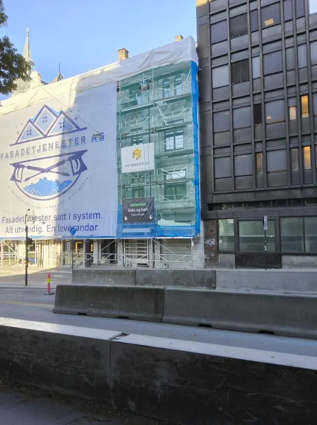

01
Fasadevask og utvendig rengjøring
Hele det utvendige, fra rekkverk til gesims. Softwash der overflaten er sårbar, høytrykk der den tåler det.
- Fasadevask
- Vindusvask
- Grafittifjerning
- Garasjevask
- Softwash
- Høytrykksvask
- Algevask og mosevask
- Utvendig rengjøring av næringsbygg